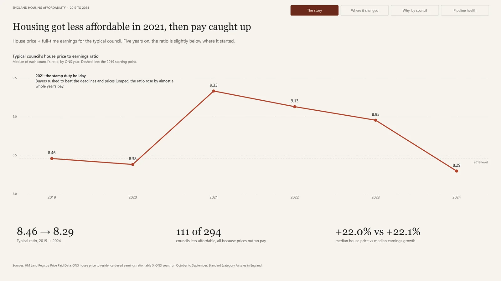
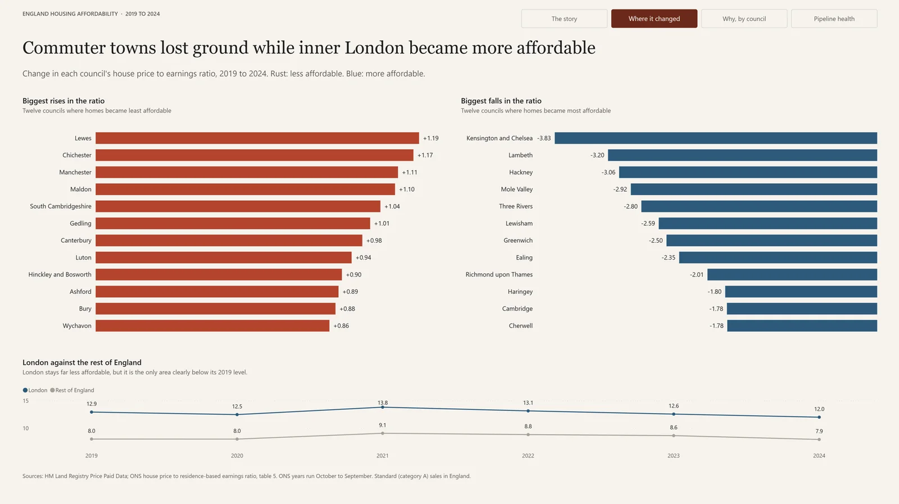
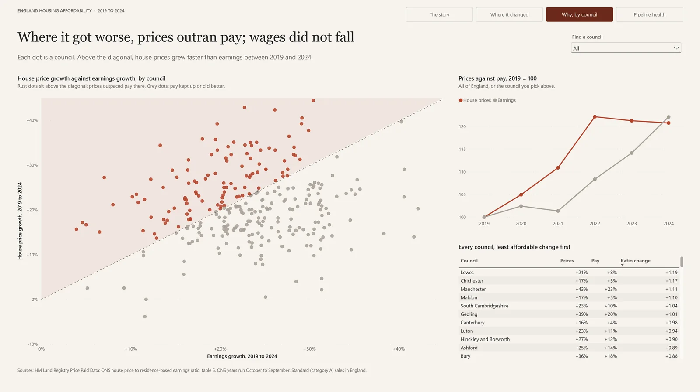
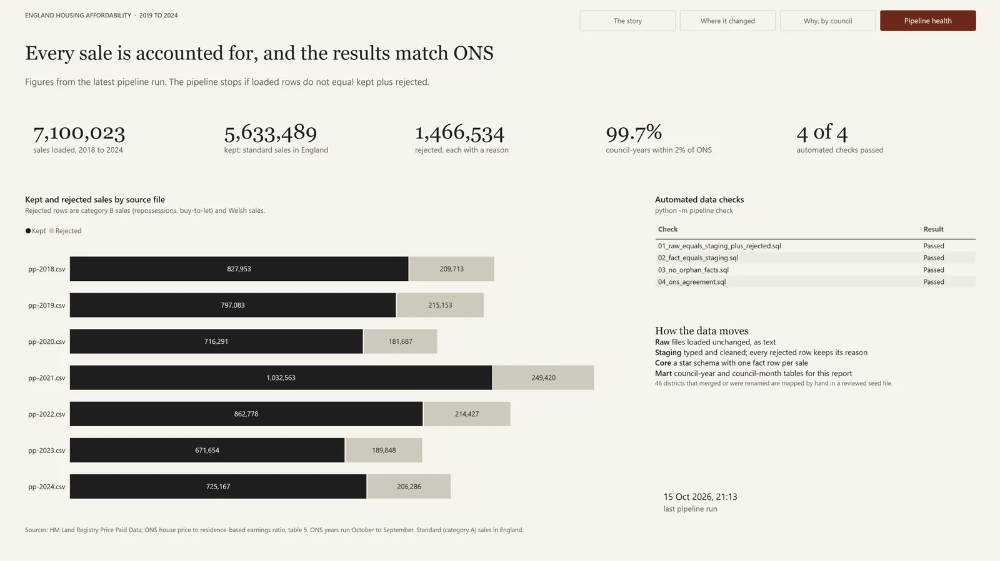

England housing affordability pipeline
Loading every house sale in England into PostgreSQL to find out where homes became harder to afford between 2019 and 2024
- What it is
- An end-to-end data pipeline and Power BI report on how affordable housing is in each council in England
- Data
- 7.1 million HM Land Registry sales (2018 to 2024) and the ONS house price to earnings tables
- Built with
- Python, PostgreSQL, SQL, pytest, GitHub Actions, Power BI
- Code
- Public on GitHub, with unit tests that run on every push
- When
- 2026
Code, SQL and Power BI project
At a glance
- Volume
- 7,100,023 sales loaded, 5,633,489 kept, and 1,466,534 rejected with a reason for each.
- Nothing lost
- The pipeline stops if the rows loaded don't equal the rows kept plus the rows rejected, for every file.
- Accuracy
- 1,770 of 1,776 council-years come within 2% of the official ONS median price.
- Model
- Raw, staging, core and mart layers in PostgreSQL, with a star schema at the core.
- The answer
- 111 of 294 councils became less affordable between 2019 and 2024, and in every one of them prices simply rose faster than pay.

The question
I built this project to work through a data pipeline properly from end to end, from downloading public files to a finished report, on a question I actually wanted answered: how affordable is housing across England's councils, and how has that changed since 2019?
Affordability here means the ratio of the median house price to median full-time earnings in a council. A ratio of 8 means a typical home costs eight years of a typical salary. The Office for National Statistics publishes this ratio every year, so I could build my own figures from individual sales and then check them against the official ones.
How the data moves
There are two sources. HM Land Registry publishes every residential sale in England and Wales as one CSV file per year, about a million rows each, and the ONS publishes earnings and its own ratios in an Excel workbook designed for people to read rather than for computers. The pipeline is a small Python package with a command line: python -m pipeline run --years 2018-2024 downloads the files it doesn't already have and builds every layer, and python -m pipeline check re-runs the checks without rebuilding anything.
Each layer lives in its own PostgreSQL schema and has one job:
| Layer | What it holds |
|---|---|
| Raw | The files loaded unchanged, every column as text, tagged with the file they came from |
| Staging | Typed and cleaned sales, and a separate table of every rejected row with the reason it was rejected |
| Core | A star schema: a fact table of sales and one of earnings, with dimensions for date, council and property type |
| Mart | Summary tables by council and year and by council and month, which are what the report reads |
| ETL log | A run log with the rows in, out and rejected for every step of every run |
The SQL that builds each layer sits in numbered files that run in order, so anyone reading the repository can follow the data from raw to mart one file at a time.
Loading without losing anything
Raw is never edited. Loading every column as text means a strange value can't stop the load, and if I get a later step wrong I can rebuild it from raw without downloading anything again. Each yearly file is streamed into PostgreSQL with COPY rather than inserted row by row from pandas, and I wrote a small script that times the two approaches against each other on the same 100,000 rows.
The question I cared about most wasn't whether the data loaded but whether all of it loaded. Before each load the pipeline counts the rows in the file, parsing it the same way COPY does so that commas inside quoted addresses don't throw the count off, and after the load it counts the rows that arrived. If the two differ, it rolls the load back, logs the failure and stops. Every step writes its counts to the run log, so any number in the report can be traced back to the file it came from.
Matching places that changed their names
Joining the two sources turned out to be the hardest part. Land Registry records each sale against a local authority district, and many of those districts no longer exist under the same name: councils have merged and been renamed several times since 2018. Harrogate and Scarborough, for example, became part of North Yorkshire in 2023, and Aylesbury Vale became part of Buckinghamshire in 2020.
315 districts match an ONS council automatically by name. The other 46 are mapped by hand in a seed file, and every row of that file carries a note explaining the mapping. An ordinary join would have dropped the sales in those 46 districts without any warning, so the pipeline stops if any district is left unmatched, which turns a silent error into a loud one. Unit tests check the name matching and the seed file, and they run on GitHub Actions for every push and pull request.
Cleaning decisions
Most of the cleaning came down to a handful of decisions, each written down with its reason:
- Reject, don't delete. 1,158,957 sales were category B, which covers repossessions, buy-to-let purchases and other non-standard sales, and 307,577 were in Wales. Both are rejected with a reason, the way ONS treats them, so raw always equals kept plus rejected, and the pipeline checks that it does.
- Flag, don't remove. 861 sales were under £10,000 or over £10 million. Some are probably real, so they are kept with a flag and each analysis can decide whether to include them.
- Use the ONS year. ONS years run from October to September. Every sale is given an ONS year, which is the only way my figures could ever line up with theirs, and it is why the 2018 file is needed for a comparison that starts in 2019.
No rows at all had a missing or unreadable price or date, which was cleaner than I'd expected from a file of seven million rows.
The model
The core is a star schema. fact_sale has one row per kept sale, 5,633,489 in total, and the dimensions describe when it happened (dim_date, with both the calendar and the ONS year), where (dim_council) and what was sold (dim_property: type, new build or not, freehold or leasehold). Earnings sit in a second fact table at council and year level. A check confirms that the fact table holds exactly as many rows as staging, so the joins to the dimensions neither lost nor duplicated anything, and another confirms that no fact row points at a dimension row that doesn't exist.
The marts are small tables built for the report. council_year holds, for each council and ONS year, the number of sales, the median price, the share of new builds, median earnings and the ratio, with the official ONS figures in the next columns and the difference between the two.
Checking it against the official figures
Before drawing any conclusions I profiled the data in a notebook, writing down what I expected before each chart so that I couldn't explain away whatever I saw. The data reflected real events: a normal month in 2019 had about 66,000 sales, April 2020 had about 24,000 during the first lockdown, and the busiest months were March and June 2021, the two deadlines of the stamp duty holiday.
The strongest evidence that the pipeline is right is that it reproduces the official numbers. For 1,770 of 1,776 council-years, the median price I calculate from individual sales is within 2% of the ONS figure. The six that miss do so by 2.4% to 3.6%, all in expensive or new-build-heavy areas, most likely because my download includes sales that were registered after ONS published.
What it found
For the typical council the ratio rose from 8.46 in 2019 to 9.33 in 2021, then eased to 8.29 by 2024, slightly below where it started. Across England, the median house price and median earnings both grew by about 22% over the five years.
Underneath that, 111 of 294 councils became less affordable, and in every one of them both prices and pay went up; prices simply rose faster. Commuter towns and the coast lost the most ground, led by Lewes, Chichester, Manchester and Maldon. London moved the other way: 29 of its 32 boroughs became more affordable and its typical ratio fell from 12.9 to 12.0, although it is still far less affordable than anywhere else. A Mann-Whitney U test confirmed that London's change was different from the rest of England's, while the share of new building showed no meaningful link with the change in affordability (Spearman ρ = 0.10, p = 0.09).
The report
The Power BI report has four pages: the national story, where affordability changed, why it changed in each council, and the health of the pipeline itself. Its headlines state the finding rather than describe the chart, and it is saved as a Power BI project, which stores the report and the data model as text files, so changes to the report show up in Git like any other code.



Limitations
The project looks at sale prices only, not rents or mortgage costs, so it doesn't capture the rise in interest rates since 2022, and it uses earnings for full-time workers only. Medians also move with the mix of homes sold: in 2020, detached houses rose to 28% of sales and flats fell to 17%, so part of that year's price rise reflects which homes sold rather than homes becoming more expensive. The two smallest councils, the City of London and the Isles of Scilly, have too few sales for a reliable median and are left out of the rankings.
What I'd do next
Land Registry also publishes a monthly file of changes, so the next step would be incremental loads that add only the new month instead of rebuilding whole years, run on a schedule with an alert when a check fails. The layers would map directly onto a lakehouse design, with raw as bronze, staging as silver and the marts as gold. On the analysis side, adding ONS private rents and Bank of England mortgage rates would cover what sale prices miss.
If you'd like to keep reading, the next project is DesktopIdle: a small tray app that tidies your Windows desktop away when you leave the computer, and puts everything back when you return.